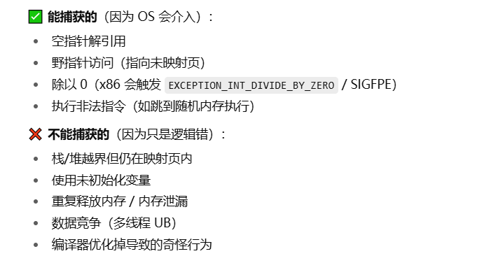

windows平台异常捕获的注意事项
Code
#include <windows.h>
#include <dbghelp.h>
#include <cstdio> // 包含sprintf_s的声明
#include <tchar.h>
#pragma comment(lib, "dbghelp.lib")
// 生成minidump文件
void CreateMiniDump(EXCEPTION_POINTERS* exceptionInfo) {
TCHAR dumpPath[MAX_PATH];
SYSTEMTIME st;
GetLocalTime(&st);
// 构建文件名（包含时间戳）
_stprintf_s(dumpPath, MAX_PATH,
_T("crash_%04d%02d%02d_%02d%02d%02d.dmp"),
st.wYear, st.wMonth, st.wDay,
st.wHour, st.wMinute, st.wSecond);
// 创建文件
HANDLE hFile = CreateFile(dumpPath, GENERIC_WRITE, 0, nullptr,
CREATE_ALWAYS, FILE_ATTRIBUTE_NORMAL, nullptr);
if (hFile == INVALID_HANDLE_VALUE) return;
// 设置minidump类型（包含堆栈和基本内存信息）
MINIDUMP_EXCEPTION_INFORMATION mei;
mei.ThreadId = GetCurrentThreadId();
mei.ExceptionPointers = exceptionInfo;
mei.ClientPointers = FALSE;
// 写入minidump
MiniDumpWriteDump(GetCurrentProcess(), GetCurrentProcessId(),
hFile, MiniDumpWithFullMemory, &mei, nullptr, nullptr);
CloseHandle(hFile);
}
// 异常处理函数
LONG WINAPI ExceptionHandler(EXCEPTION_POINTERS* exceptionInfo) {
CreateMiniDump(exceptionInfo);
return EXCEPTION_EXECUTE_HANDLER;
}
void Tsk(int* a) {
*(a+2000) = 10;//有时候加一千就崩溃有时候加两千，内存分页大小为4KB
}
int main() {
// 注册异常处理器
SetUnhandledExceptionFilter(ExceptionHandler);
// 测试代码 - 制造崩溃
int* p = new int[5];
Tsk(p);
//RaiseException(EXCEPTION_ACCESS_VIOLATION, 0, 0, nullptr);
return 0;
}
